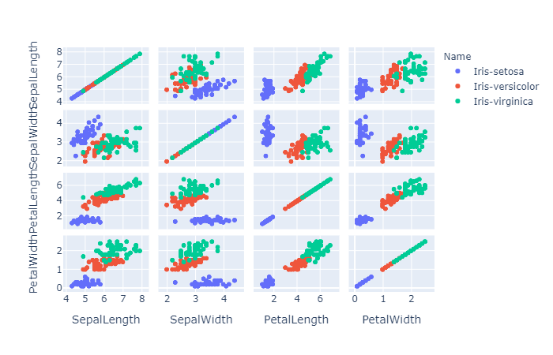

plotly学习：
import plotly.graph_objects as go
是画图的主要库
选择类型
go.Scatter()
画点或者画线
在Scatter()中传入mode='markers’即可创建散点图
默认mode='lines'即直线图
也可以mode='lines+markers'设为折线图
go.Bar()建立柱状图
go.Scatter()建立散点或者折线图
go.Scatter3d()建立3d散点图，可以传入mode参数同上
在创建这些图表的过程中，可以传入marker参数修改一些细节
比如marker={'size':3,'color':'red'}将颜色设置为红色。
也可以传入name参数修改图例名称。
图表优化
在创建完图表之后可以对其进行优化
fig = go......
fig.update_layout(
title='title',#图表标题
xaxis_title='xlable',#x轴名称
yaxis_title='ylable',#y轴名称
)
颜色分类
import plotly.express as px
fig = px.scatter(data,x=data[],y=data[],color='某一列')
fig = px.scatter_3d(data,x=data[],y=data[],z=data[],color='某列')
fg.show()
~~注意这个scatter的s是小写的，不要出错哦~~
用这个可以显示渐变的颜色以更好的分类。
直方图
创立直方图
用
go.Histogram(data[''],xbins={'size':10})#xibns修改组距 即每一个柱的宽度
fig = go.Figure(hist)
fig.update_layout(bargap=0.1)#修改至每一段图的间距，即修改每个柱间的距离
多维图表
多维的图表的话用plotly.express里的函数
fg = px.scatter_matrix(data,dimensions=[''],color='某一列')
其中第二个参数是传入的各列名字的列表
- 
plotly画图的一般步骤 1.导入模块：import plotly
import plotly.graph_objects as go
import pandas2.用pandas读入csv文件
data = pandas.read_csv('')3.选择建立的图标类型，是柱状图，还是散点图，还是折线图，还是3d图。
4.以折线图为例
scatter = go.Scatter(x='x轴数据',y=‘y轴数据’，name='图例名称')
fg = go.Figure(scatter)
fg.show()
ps:若要建立多个图例的表，需要以下操作。scatter1=go.....
scatter2=go.....
........
scattern=go.....
fg = go.Figure((scatter1,scatter2......))可以用循环写入 最后
fg.show()5.注意的地方： 柱状图注意要显示每个柱子上面的数字的话要加上
text参数，然后令textposition参数的值为outside